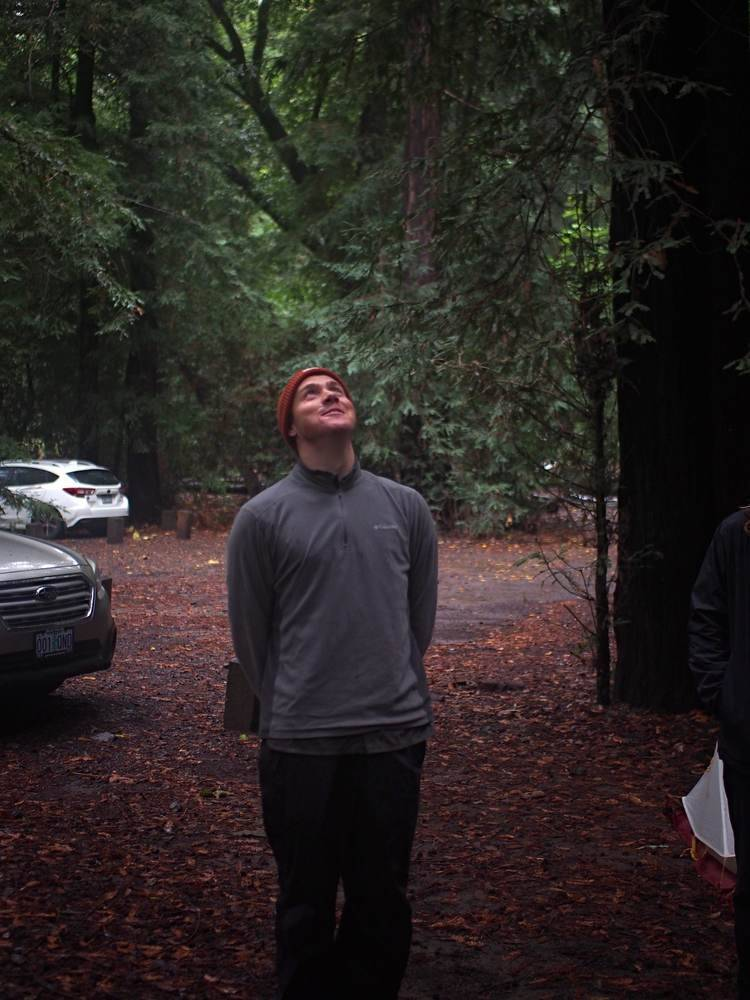
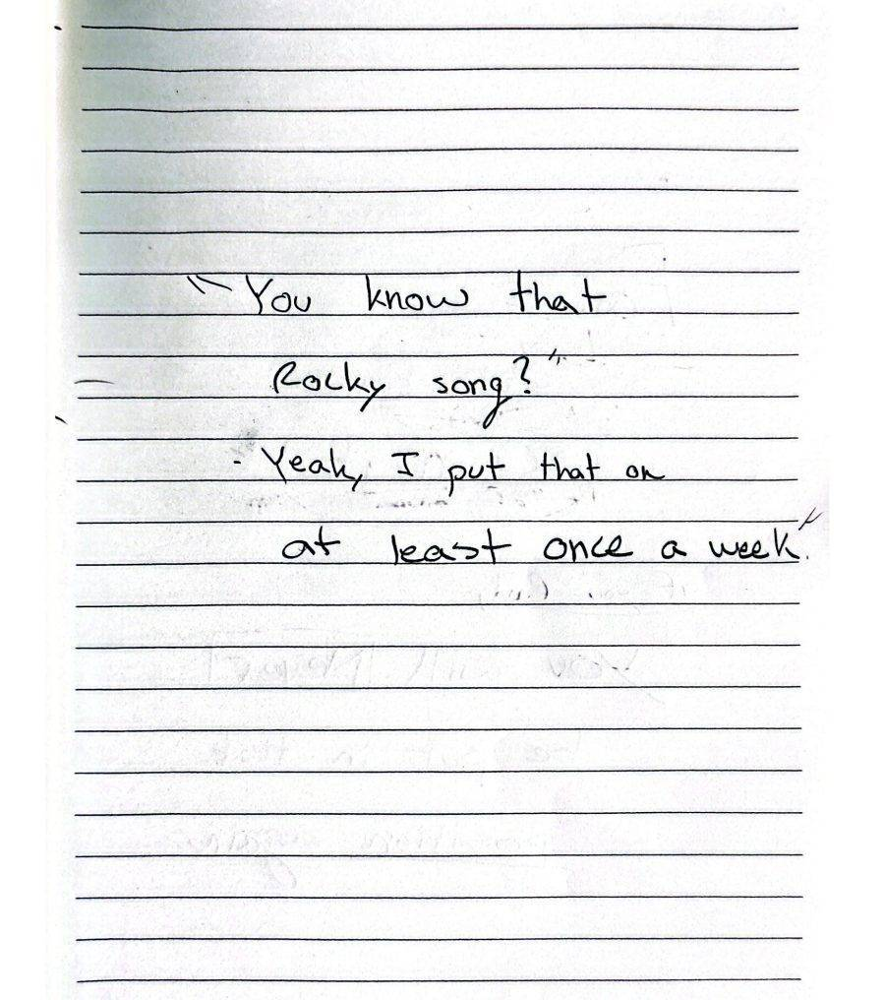

Explore.
Perform.
Belong.
Notes from an "Old Soul."
Principles I'm learning through experience.
This page is meant to feel like reflecting in a misty redwood forest — calm, simple, and easy to explore.

Notes from a so-called "Old Soul"
Click a title to unfold the lesson.Direction
Not sure where to go? Go 100% in one direction. Even if it's the wrong way, you'll learn faster than doing nothing while trying to decide.
(Caveat: this is not good wilderness navigation advice. If you're actually lost in the woods — stay put and conserve energy.)
Challenge
People grow when the challenge is real. But only when support is real too.
Too easy — nothing to learn. Too hard — traumatic. The sweet spot is where growth lives.
Lesson learned: respect unknown limits. On my Utah Slot Canyon expedition, I pushed someone past where they were ready to go and watched a shutdown happen. Challenges must be calibrated and assessed beforehand.
Leadership
When conditions get uncertain, people look for something to hold onto.
A significant number of drownings happen in water shallow enough to stand in. People panic. They just need someone calm saying, "Stand up — you can stand."
A good leader reduces chaos, makes clear decisions, and protects the group's energy. Calm becomes contagious.
Community
Everyone is part of your community. Every conversation matters.
You're always shaping yourself while helping shape others. Belonging is essential to human life — and belonging is built intentionally through shared experience.
Procedure
As an engineering-minded person, procedures are everything. Things need to be written down. Action follows structure.
Checklists matter. Clear roles matter. Preparation creates freedom.
Structure doesn't kill adventure — it protects it, and allows creativity and fun to exist elsewhere.
Example: my first lobster diving trip, I forgot to pick up one of the participants. Completely preventable. A simple pre-departure checklist would have solved it. Systems exist because memory fails.
Decision Making
Be a firm decision maker. Make decisions slightly earlier than feels comfortable.
Waiting for certainty usually means reacting instead of leading. Attunement matters more than perfection.
As a lifeguard, hesitation was often the real risk. People don't need delayed perfection — they need timely clarity.
Failure
"Something you can never, ever come back from."
Own it. Don't blame. Adjust quickly.
Trust can be regained, but it takes lots of time.
Submarining
Sometimes the best move is not to engage.
When someone oversteps authority or refuses to change their mind, arguing rarely helps. Instead, nod, stay calm, and conserve energy. Get into your submarine — go below the rough surface and wait it out. Let time do its thing!
Things tend to resolve themselves.
Not every wave needs to be fought. Sometimes leadership means going deep, staying steady, and resurfacing when the water calms.
Adventure
The call to adventure keeps you alive. Comfort eventually turns restless.
To take the road less traveled — and that made all the difference.
Endurance
Push yourself, because the view from the top is the best you will have ever seen.
Have some "who's gonna carry the boats" moments.
The Ocean
There's a calmness to the ocean. It's chaotic yet predictable.
After a heavy wave hold-down, you get tossed left, right, upside down. You start swimming up — then hit the sandy bottom. Don't panic. Relax. The ocean eventually releases you.
Fighting chaos usually makes it worse. Awareness creates escape.
Balance
There is more time in the day than we think. Be intentional with it.
Design your ideal day — responsibilities included — and follow it. Order creates freedom.
Human Performance
The question underneath everything: How can we squeeze the most juice out of the lemons life gave us?
That's what I'm still exploring.
Dr. Beaman's Lessons
Open the full page →A collection of lessons worth carrying forward.
